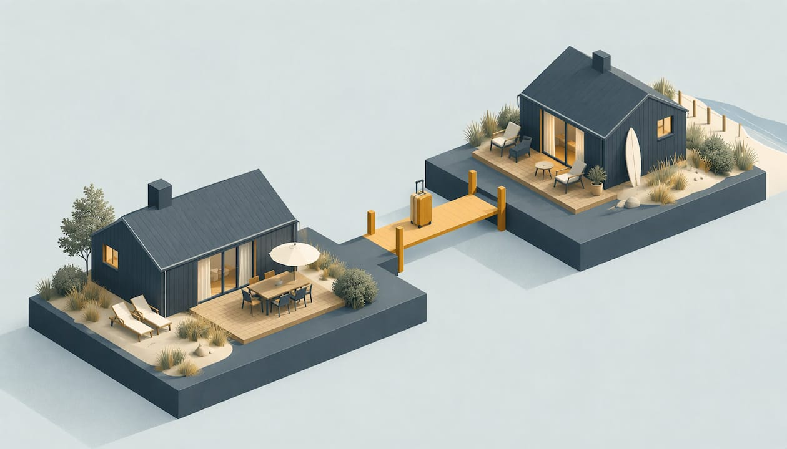
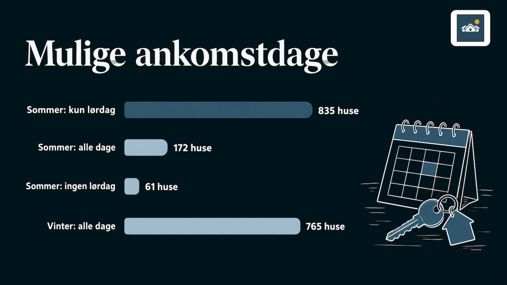
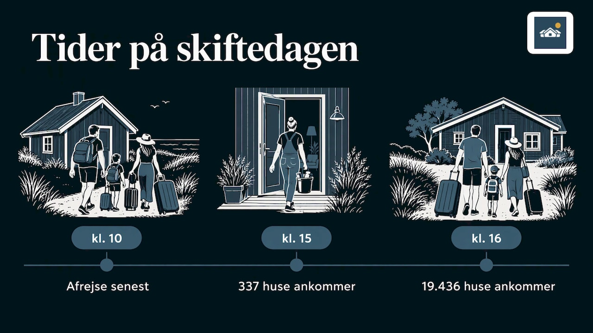

Skiftedage i sommerhus: sådan undgår familien kludder
Hvad er en skiftedag i sommerhus, hvorfor er det lørdag, og hvordan vælger familien med fælles hus en skiftedag, der fjerner overlap og dobbeltbookinger?
Opdateret 23. november 2026

Skiftedagen er den dag, hvor én gruppe forlader sommerhuset, og den næste tager over. I danske lejehuse er det næsten altid lørdag med afrejse om formiddagen og ankomst om eftermiddagen. Deler I et sommerhus i familien, har I ingen bureau, der bestemmer skiftedagen for jer. Derfor opstår kludderet: to søskende, der begge troede, de havde huset fra fredag, en seng, der ikke er redt, og en diskussion om, hvem der skulle have gjort rent. Løsningen er at gøre som udlejningsbranchen: én fast skiftedag, faste tider og én fælles kalender, som alle kan se. Her får du baggrunden, tallene, og hvordan I sætter jeres egen skiftedag op, så dobbeltbookinger ikke opstår.
Kort sagt
- En skiftedag er den faste dag, hvor ét ophold slutter, og det næste begynder. I danske lejehuse er det typisk lørdag.
- I sommeren 2027 har knap fire ud af fem sommerhuse med ugepriser kun lørdag som ankomstdag, mens næsten alle huse i februar og marts kan lejes fra enhver ugedag.
- Afrejse er normalt senest kl. 10 og ankomst fra kl. 16. Ind imellem skal huset gøres rent og klar.
- Familier med fælles sommerhus har gavn af den samme disciplin: aftal én skiftedag, faste tider og hvem der gør hvad, før næste familie kommer.
- Dobbeltbookinger undgår I bedst med én fælles kalender, som alle ser og får besked fra, frem for beskeder spredt over sms og mails.
Indholdsfortegnelse
- Hvad betyder skiftedag i et sommerhus?
- Lørdag er stadig den store skiftedag
- Ankomst, afrejse og rengøring: tiderne der styrer dagen
- Hvorfor familier med fælles sommerhus også har brug for en skiftedag
- Sådan vælger I jeres egen skiftedag
- Skiftedagen i højtiderne: jul, nytår, vinterferie og påske
- Når I også lejer huset ud
- Sådan undgår I dobbeltbookinger og overlap
- Én kalender til hele familien
- Ofte stillede spørgsmål
- Kilder
Hvad betyder skiftedag i et sommerhus?
Ordet skiftedag er gammelt. Det blev brugt om de faste datoer, hvor tjenestefolk skiftede plads. I dag betyder det i sommerhussammenhæng den dag, hvor et ophold formelt afsluttes, og huset går videre til de næste. Skiftedagen er altså både slutdato for den ene og startdato for den anden.
Det lyder simpelt, men skiftedagen er også den dag, hvor alt det praktiske skal ske: huset skal tømmes for madvarer og affald, gøres rent, have rent sengetøj og være klar, inden de næste kommer. Derfor hænger skiftedagen altid sammen med to klokkeslæt: hvornår de afrejsende senest skal være ude, og hvornår de ankommende tidligst må komme ind.
Ifølge VisitDenmark lejes danske sommerhuse normalt på ugebasis med lørdag som skiftedag, mens man uden for højsæsonen ofte kan leje kortere perioder. Det er den rytme, de fleste danske familier kender fra ferier i lejede huse, og det er den, mange tager med sig, når de begynder at dele et hus selv.
Lørdag er stadig den store skiftedag
I højsæsonen er lørdag fortsat helt dominerende. Fjord- og Havhuses opgørelse over skiftedage gennemgik 1.072 sommerhuse med ugepriser for sommeren 2027 (ankomst fra 26. juni til 13. august), målt 16. oktober 2026. Resultatet:
| Periode | Huse i opgørelsen | Kun lørdag som ankomstdag | Alle ugens dage mulige | Ingen lørdag |
|---|---|---|---|---|
| Sommer 2027 (højsæson) | 1.072 | 835 | 172 | 61 |
| Februar og marts 2027 | 860 | ikke opgjort | 765 | ikke opgjort |
Knap fire ud af fem huse har altså kun lørdag i sommerferien, mens langt de fleste huse i vintermånederne kan lejes fra en hvilken som helst dag. Mønstret er logisk: når huset er fuldt booket uge efter uge, giver en fast skiftedag den mest stabile planlægning af rengøring og nøgler. Når der er luft i kalenderen, kan man tillade mere fleksibilitet.
Lørdagen har også en bagside, som de fleste har mærket på vejene. Da den store lørdagsskiftedag i juli 2020 gav lange køer blandt andet ved Storebæltsforbindelsen, var det netop fordi rigtig mange skulle ud af eller ind i et sommerhus samme dag.
Branchen eksperimenterer derfor med alternativer. DR har beskrevet, hvordan en nordjysk feriehusudlejer tilbyder fleksibel ankomstdag i højsæsonen, og flere bureauer lader ejerne vælge mellem fredag, lørdag og søndag. Pointen for jer, der deler et hus: der er ingen naturlov om lørdag. Det vigtige er, at I har én dag, som alle kender.

Ankomst, afrejse og rengøring: tiderne der styrer dagen
Skiftedagen fungerer kun, fordi tiderne er faste. Ifølge samme opgørelse fra Fjord- og Havhuse, med data fra 12. november 2026, har 19.436 af 19.774 sommerhuse ankomst fra kl. 16, 337 har ankomst fra kl. 15, og alle har afrejse senest kl. 10. Det giver et vindue på omkring seks timer, hvor huset står tomt og skal gøres klar.

Novasols FAQ om ind- og udtjekning beskriver samme mønster: indtjekning mellem kl. 16.00 og 20.00 og udtjekning senest kl. 10.00 i de fleste ferieboliger.
Rengøringen er den del, der oftest giver gnidninger. I lejede huse kan slutrengøring være med i lejen, købes som tillæg eller klares af gæsten selv. Fjord- og Havhuse fandt, at slutrengøring, hvor den ikke er med i lejen, typisk koster 1.083 kr. (opgjort i oktober 2026). Selv med betalt rengøring forventer mange bureauer, at gæsten selv tager opvask, tømmer køleskabet og rydder op.
Oversat til et familiehus betyder det: aftal præcis, hvad “efterlad huset pænt” dækker. Er det støvsugning? Rent sengetøj? Tømt køleskab? Vasket grill? Jo mere konkret listen er, jo færre sure miner hos den, der ankommer kl. 16 til et halvt rengjort hus. Vores tjekliste til ankomst og afrejse er et godt sted at starte.
Hvorfor familier med fælles sommerhus også har brug for en skiftedag
Når et sommerhus deles mellem søskende, forældre og voksne børn eller en vennegruppe, føles faste regler måske overflødige. Det er jo familie. Men det er netop i familier, at de uskrevne forventninger støder sammen: den ene tænker “weekenden” som fredag til søndag, den anden som lørdag til mandag, og ingen har sagt det højt.
Bolius anbefaler klare aftaler i et fælles sommerhus, blandt andet om hvordan I i store træk fordeler hovedferien. Skiftedagen er det mest konkrete af disse spørgsmål, fordi den afgør, hvornår ét ophold slutter, og det næste begynder.
En fast skiftedag i familiehuset giver tre ting:
- Klare grænser mellem opholdene. Ingen er i tvivl om, hvornår de skal være ude, og hvornår de må komme ind.
- Tid til at gøre huset klar. Der er et fast vindue til rengøring, sengetøj og en hurtig runde med tjeklisten.
- En kalender, der går op. Når alle ophold starter og slutter på samme dag, kan uger og halve uger sættes ind uden huller og overlap.
Har I endnu ikke fået snakket de store ting igennem, så se vores guide til de 10 ting, I bør aftale, når I deler sommerhus. Skiftedagen er én af dem.
Sådan vælger I jeres egen skiftedag
Der er ikke ét rigtigt svar, men der er nogle spørgsmål, I bør tage stilling til i fællesskab.
1. Lørdag, fredag eller søndag?
Lørdag passer til den klassiske ugeferie og til, at mange er vant til den. Fredag giver de afrejsende en weekend hjemme før arbejde og skole, og den ankommende familie kan køre direkte fra arbejde. Søndag kan passe familier, der bor tæt på huset og bruger det til weekender. Vælg den dag, der passer til flest af jer, og skriv den ned.
2. Faste tider
Brug branchens tider som udgangspunkt: ude senest kl. 10 og ind tidligst kl. 16. Bor I tæt på hinanden og kender rytmen, kan I godt aftale ude kl. 12 og ind kl. 15. Det vigtige er, at tiderne er de samme hver gang, så ingen skal spørge.
3. Halve uger og weekender
Deler I huset i kortere perioder, så aftal en ekstra skiftedag midt i ugen. En model, nogle udlejere bruger, er fredag som hoveddag og mandag for halve uger. Så kan én familie have fredag til mandag og en anden mandag til fredag uden overlap.
4. Undgå køen
Skal I krydse Storebælt eller køre ad de store sommerhusruter i juli, er en lørdag med afrejse kl. 10 og ankomst kl. 16 netop det tidspunkt, hvor vejene er fyldt. En fredag eller søndag kan gøre turen langt roligere.
5. Hvem gør rent?
Aftal, om den afrejsende familie gør huset helt klar, eller om I deler udgiften til en rengøringshjælp. Vælger I det sidste, skal udgiften fordeles retfærdigt. Vores beregner til fælles udgifter viser, hvordan I kan gøre det.
6. Skriv det ned
En skiftedag, der kun findes i hovedet på den ældste bror, er ikke en aftale. Saml skiftedag, tider og rengøringskrav i jeres husregler. Brug gerne vores gratis skabelon til husregler.
Skiftedagen i højtiderne: jul, nytår, vinterferie og påske
Højtiderne er dér, hvor faste skiftedage oftest skrider, både i lejehuse og familiehuse. Jul og nytår falder sjældent pænt på en lørdag, og påsken flytter sig fra år til år. Mange udlejere afviger derfor fra deres normale skiftedag omkring helligdage.
For jer, der deler et hus, er det klogt at behandle højtiderne som særskilte perioder med egne skiftedage:
- Jul og nytår: Aftal en skiftedag mellem jul og nytår, fx 27. eller 28. december, så én familie har julen og en anden nytåret. Eller lad perioden gå på skift fra år til år.
- Vinterferie (uge 7 og 8): Skolerne har vinterferie i forskellige uger afhængigt af kommunen. Har søskende børn i forskellige kommuner, kan begge familier ofte få en hel vinterferie hver.
- Påske: Brug skærtorsdag eller langfredag som skiftedag, hvis to familier deler påsken, eller lad påsken rotere.
- Efterårsferie (uge 42): Ligesom vinterferien er den populær. En rotationsordning, hvor rækkefølgen skifter hvert år, fjerner diskussionen.
Læg højtiderne ind i kalenderen et år frem. Så kan alle planlægge, og ingen opdager i november, at de to familier begge har inviteret svigerforældrene til nytår.
Når I også lejer huset ud
Mange familier lejer huset ud i de uger, de ikke selv bruger det. Så skal jeres egen skiftedag passe med bureauets. Hos nogle bureauer kan ejeren selv vælge skiftedag. Sol og Strand lader husejere vælge fredag, lørdag eller søndag og spærre de uger, familien selv vil bruge.
I praksis betyder det, at familiens egen kalender er den, der skal styre: først lægger I jeres egne uger ind, så spærrer I dem hos bureauet, og resten kan udlejes. Går det den anden vej, risikerer I at opdage, at en lejer har fået den uge, som én af jer havde regnet med.
Bruger I samme skiftedag som bureauet, også i jeres egne uger, glider det hele lettere. Rengøringsfirmaet kender rytmen, nøgleboksen skifter kode samme dag, og der er ingen halve dage mellem en lejer og en familie, der står tomme eller overlapper.
Sådan undgår I dobbeltbookinger og overlap
Dobbeltbookinger i familiehuse opstår næsten aldrig af ond vilje. De opstår, fordi oplysningerne ligger flere steder: en sms til mor, en besked i familiechatten, et notat i én persons kalender. Sådan får I styr på det:
- Hav én kalender, ikke flere. Alle bookinger skal stå ét sted, som alle kan se. I Hyttio er der én fælles bookingkalender for huset, og alle får en notifikation, når der bookes.
- Book altid fra skiftedag til skiftedag. Når ophold kun kan starte og slutte på jeres aftalte skiftedage, kan der ikke opstå små overlap på en halv dag.
- Lad kalenderen være med i hverdagen. En fælles kalender virker kun, hvis man kigger i den. Hyttio kan vise husets bookinger i Google Kalender og Outlook, så de står ved siden af arbejde og fritidsaktiviteter.
- Fordel opgaverne på skiftedagen. Hvem tømmer skraldespandene, hvem tænder for vandet om foråret, hvem skifter batteriet i røgalarmen? I Hyttio kan opgaver få en ansvarlig og en deadline.
- Gør det praktiske let at finde. Wifi-kode, hvor nøglen ligger, hvordan pumpen startes. I Hyttio samles det i en husbog, så den ankommende familie ikke skal ringe til den afrejsende.
- Afregn med det samme. Rengøring, brænde og el skal deles. I Hyttio registreres udgifter med kvitteringer, og appen fordeler regninger og saldi automatisk, så ingen skal holde regnskab med plusser og minusser.
Én kalender til hele familien
Vi har lavet Hyttio til familier og grupper, der deler et sommerhus eller en hytte. Appen samler bookingkalender, udgifter, opgaver, husbog og indkøbsliste ét sted, så alle kan se, hvornår huset er ledigt, og hvem der kommer næste gang. Hyttio er gratis, uden reklamer og findes til iPhone.
Jeres data gemmes i jeres egen iCloud og deles kun med dem, I inviterer. Det betyder, at husets kalender og regnskab bliver i familien. Når I har aftalt jeres skiftedag, er det næste skridt at lægge den ind ét sted, hvor alle kan se den. Hent Hyttio og opret jeres fælles hus.
Ofte stillede spørgsmål
Hvilken dag er skiftedag i danske sommerhuse?
Lørdag er den mest almindelige skiftedag, især i sommerferien, hvor knap fire ud af fem huse med ugepriser kun har lørdag som ankomstdag. Uden for højsæsonen kan de fleste huse lejes fra en hvilken som helst ugedag. Nogle udlejere bruger fredag eller søndag.
Hvornår skal man være ude af sommerhuset på skiftedagen?
I lejehuse er afrejse næsten altid senest kl. 10, og ankomst er normalt fra kl. 16. Det er tiderne på lejebeviset, der gælder. I et familiehus aftaler I selv tiderne, men de samme klokkeslæt er et godt udgangspunkt.
Hvordan fordeler vi skiftedage, når vi deler sommerhus i familien?
Vælg én fast skiftedag, fx fredag eller lørdag, og evt. en ekstra dag til halve uger. Lad højtider og populære ferieuger gå på skift fra år til år. Skriv aftalen ind i husreglerne, og læg alle bookinger i én fælles kalender.
Hvad gør vi, hvis to i familien har booket samme uge?
Find ud af, hvem der bookede først, og hold fast i den rækkefølge, I har aftalt. Lav derefter én fælles kalender, hvor alle bookinger står, så situationen ikke gentager sig. Med notifikationer ved hver ny booking ser alle det med det samme.
Kilder
- Fjord- og Havhuse: Skiftedag, ankomst og afrejse i sommerhus
- VisitDenmark: Holiday homes in Denmark
- Berlingske: Store skiftedag i danske sommerhuse udløste lange køer
- DR: Fleksibel sommerhusudlejning er det nye sort
- Novasol: Hjælp og FAQ
- Sol og Strand: Bliv udlejer
- Bolius: Drømmen om fælles sommerhus kræver klare aftaler
Læs også
- Fordel udgifter i fælles sommerhus – beregner
- Tjekliste til sommerhuset: ankomst og afrejse
- Dele sommerhus med familien: 10 ting at aftale
- Husregler til sommerhuset – gratis skabelon
Flere guider
Tjeklisten i lommen
Opgaver, der husker sig selv
I Hyttio får hver opgave en ansvarlig og en deadline, og det, der skal gøres hvert år, dukker op af sig selv.
Hent Hyttio i App StoreGratis til iPhone. Uden reklamer og uden konto.
Ingen glemmer at lukke for vandet
Fælles opgaver og husbog i Hyttio – gratis for hele familien.
Hent gratis i App Store